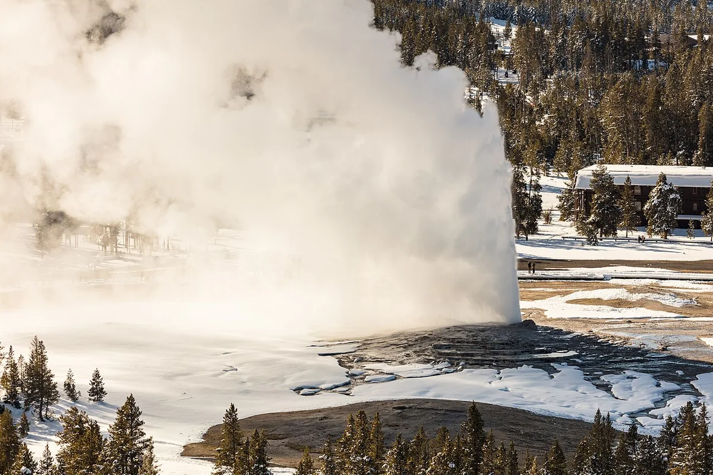
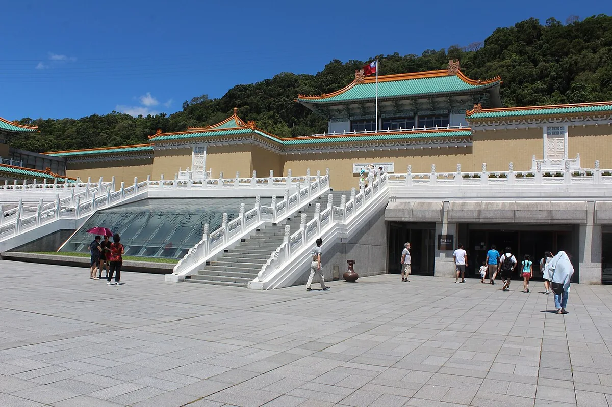
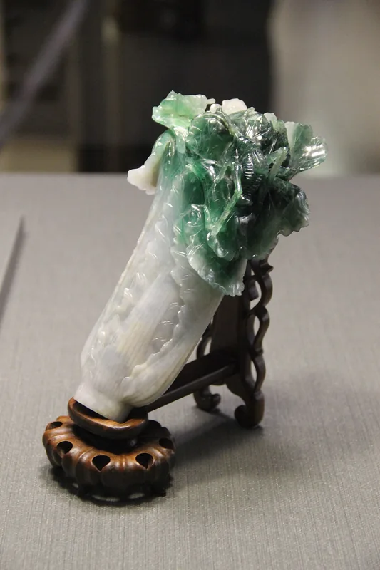
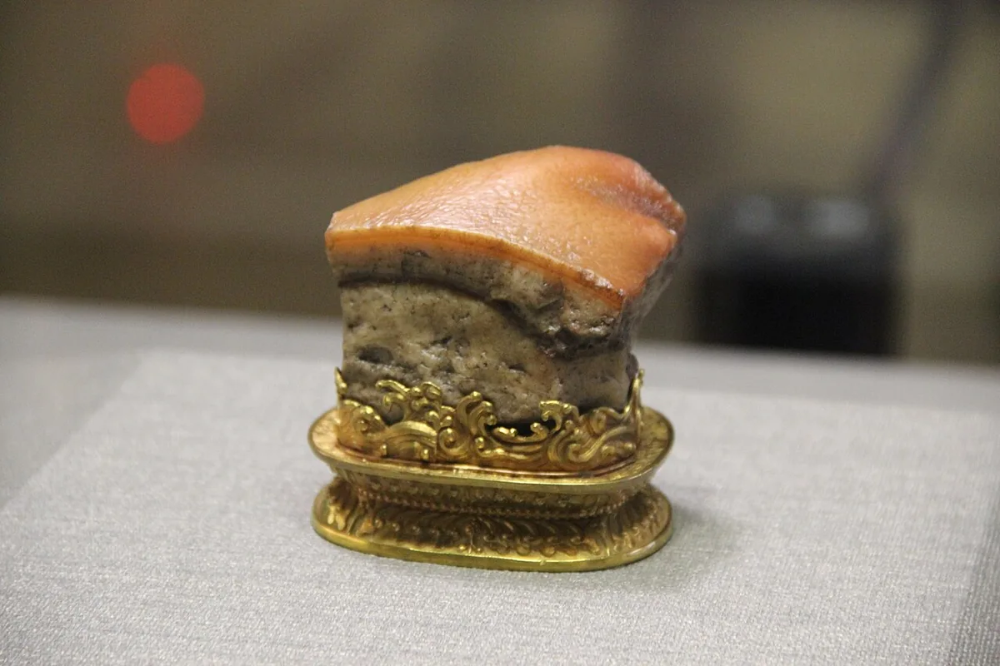
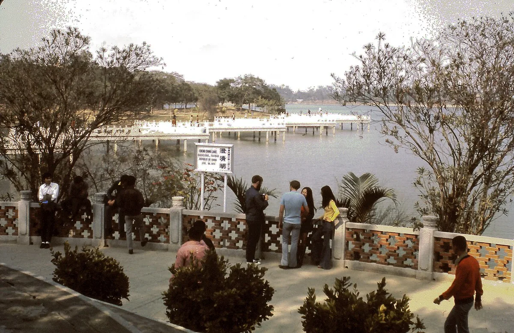
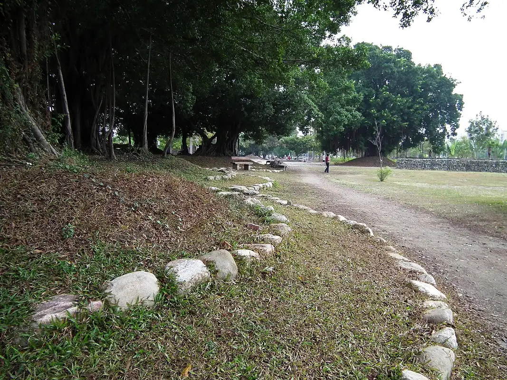
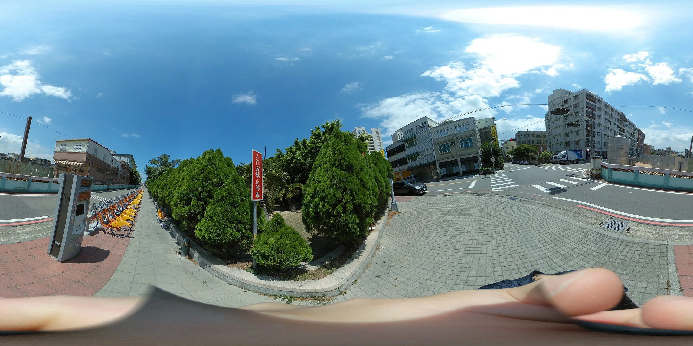
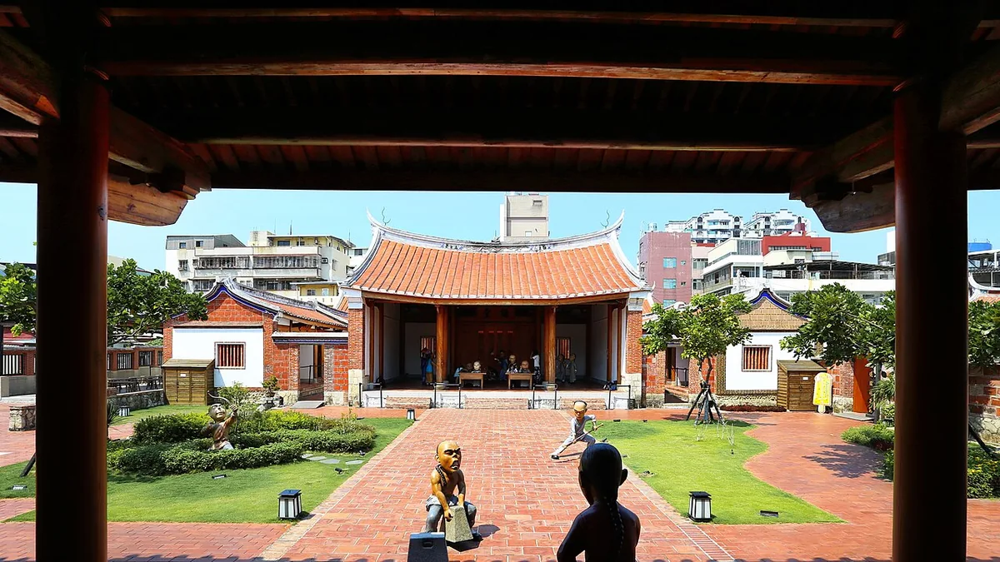
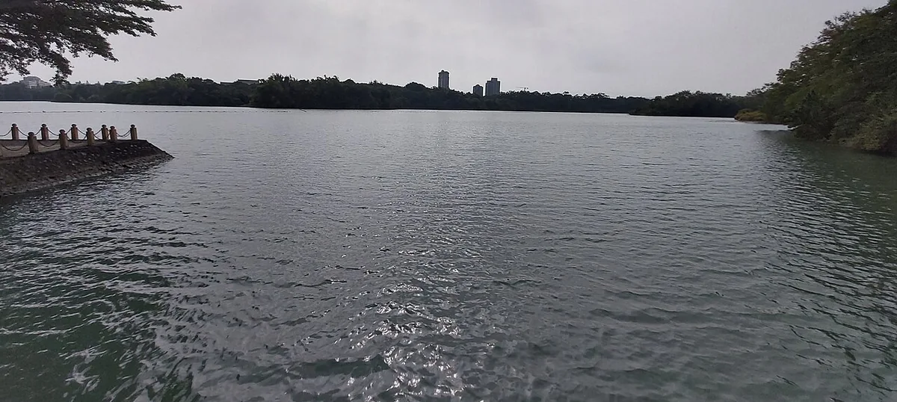

AERO 真實照片與授權
Real photographs and reuse credits. 此套件使用逐檔明示的公有領域、CC0、CC BY、CC BY-SA照片。照片各自沿用原授權，與遊戲程式碼的授權分開。重散布時請保留此頁、manifest.json與照片來源、作者、授權連結。CC BY-SA影像的改作需依同一或相容授權散布。
照片是拍摄當時的紀錄，並非即時衛星畫面或現場直播；兩張360°照片是定點環景，未重建場景深度。故宮文物照片不代表當日展覽清單。所有座標均有標示來源性質。
老忠實間歇泉 · Old Faithful

NPS / Jacob W. Frank / Public domain (U.S. government work) · 授權條款 / License · 原始檔案頁 / Source
Resized proportionally; encoded as WebP; no generative editing. 經比例縮小、WebP轉檔；未經生成式改圖。改作圖片沿用原授權。
老忠實是黃石上間歇泉盆地的著名間歇泉；可從觀景步道認識熱水、蒸汽與地下裂隙形成的噴發。
Old Faithful is a well-known geyser in Yellowstone’s Upper Geyser Basin. Its eruptions demonstrate the interaction of heated groundwater, steam and underground channels.
景點資料來源 / Destination information · 1200×800 · 189 KiB
大稜鏡溫泉 · Grand Prismatic Spring

NPS / Jacob W. Frank / Public domain (U.S. government work) · 授權條款 / License · 原始檔案頁 / Source
Resized proportionally; encoded as WebP; no generative editing. 經比例縮小、WebP轉檔；未經生成式改圖。改作圖片沿用原授權。
大稜鏡溫泉位於黃石中途間歇泉盆地，是園內最大的溫泉；池心與周緣呈現不同色帶。
Grand Prismatic Spring is in Yellowstone’s Midway Geyser Basin and is the park’s largest hot spring. The pool and its margins display contrasting bands of color.
景點資料來源 / Destination information · 1199×800 · 206 KiB
太平山見晴懷古步道 · Jancing Historic Trail

lumoplank / CC0 · 授權條款 / License · 原始檔案頁 / Source
Resized proportionally; encoded as WebP; no generative editing. 經比例縮小、WebP轉檔；未經生成式改圖。改作圖片沿用原授權。
見晴懷古步道沿昔日太平山運材鐵道路線整建；苔蘚、蕨類與舊軌道共同留下林業歷史的痕跡。
Jancing Historic Trail follows part of a former Taipingshan logging railway. Moss, ferns and surviving rails reveal the area’s forestry history.
景點資料來源 / Destination information · 1115×800 · 244 KiB
太平山蹦蹦車 · Taipingshan Bong Bong Train

*嘟* / CC BY 2.0 · 授權條款 / License · 原始檔案頁 / Source
Resized proportionally; encoded as WebP; no generative editing. 經比例縮小、WebP轉檔；未經生成式改圖。改作圖片沿用原授權。
太平山蹦蹦車與山地運材鐵道的歷史相連；今日的遊憩列車讓旅客從軌道視角欣賞森林。
The Taipingshan Bong Bong Train is linked to the mountain logging railway. The recreation train offers a rail-level view of the surrounding forest.
景點資料來源 / Destination information · 1200×798 · 240 KiB
翠峰湖 · Cueifong Lake

Taiwankengo / CC BY-SA 4.0 · 授權條款 / License · 原始檔案頁 / Source
Resized proportionally; encoded as WebP; no generative editing. 經比例縮小、WebP轉檔；未經生成式改圖。改作圖片沿用原授權。
翠峰湖位在太平山山區；環湖步道沿舊運材軌道路線整理，周圍可見常受雲霧影響的森林與泥炭蘚環境。
Cueifong Lake lies in the Taipingshan mountains. Its circle trail follows an old timber-rail route through mist-influenced forest and peat-moss habitat.
景點資料來源 / Destination information · 1200×800 · 183 KiB
臺北國立故宮博物院 · National Palace Museum

Jason Zhang / CC0 · 授權條款 / License · 原始檔案頁 / Source
Resized proportionally; encoded as WebP; no generative editing. 經比例縮小、WebP轉檔；未經生成式改圖。改作圖片沿用原授權。
國立故宮博物院臺北外雙溪新館於1965年揭幕，典藏書畫、器物與圖書文獻。虛擬展示使用館藏照片；現場展品會輪換。
The National Palace Museum’s Taipei building opened in 1965 and houses painting, calligraphy, objects and historical books. These collection photographs do not imply that an object is currently on display.
景點資料來源 / Destination information · 1200×800 · 179 KiB
翠玉白菜 · Jadeite Cabbage

Gary Todd / CC0 · 授權條款 / License · 原始檔案頁 / Source
Resized proportionally; encoded as WebP; no generative editing. 經比例縮小、WebP轉檔；未經生成式改圖。改作圖片沿用原授權。
清代翠玉白菜運用玉石原有的白色與綠色，將莖葉與昆蟲雕成細緻作品；圖片呈現典藏文物，不代表即時展出狀態。
This Qing-dynasty Jadeite Cabbage uses the stone’s natural white and green areas to shape the stalk, leaves and insects. The image shows a collection object, not a live exhibition feed.
景點資料來源 / Destination information · 533×800 · 38 KiB
肉形石 · Meat-shaped Stone

Gary Todd from Xinzheng, China / CC0 · 授權條款 / License · 原始檔案頁 / Source
Resized proportionally; encoded as WebP; no generative editing. 經比例縮小、WebP轉檔；未經生成式改圖。改作圖片沿用原授權。
清代肉形石利用碧石天然層狀紋理並經加工，呈現近似肉塊的外觀；此為故宮典藏文物照片。
The Qing-dynasty Meat-shaped Stone uses naturally layered jasper, refined by the artisan to resemble a piece of meat. This is a photograph of an NPM collection object.
景點資料來源 / Destination information · 1200×800 · 82 KiB
澄清湖九曲橋・1973年歷史照片 · Nine-Turn Bridge, Chengcing Lake — historical photograph, 1973

Born2bdigital304 / CC BY-SA 3.0 · 授權條款 / License · 原始檔案頁 / Source
Resized proportionally; encoded as WebP; no generative editing. 經比例縮小、WebP轉檔；未經生成式改圖。改作圖片沿用原授權。
1973年拍攝的澄清湖九曲橋歷史照片，可與較新的湖畔照片比較景觀和遊客活動的變化。
This historical photograph records the Nine-Turn Bridge at Chengcing Lake in 1973. Compare it with the newer lakeside image to explore changes over time.
景點資料來源 / Destination information · 1200×778 · 218 KiB
衛武營都會公園 · Weiwuying Metropolitan Park

lienyuan lee / CC BY 3.0 · 授權條款 / License · 原始檔案頁 / Source
Resized proportionally; encoded as WebP; no generative editing. 經比例縮小、WebP轉檔；未經生成式改圖。改作圖片沿用原授權。
衛武營由軍事用地轉變為城市綠地；都會公園保留老樹，與鄰近的表演藝術場館共同構成文化休憩空間。
Weiwuying developed from military grounds into an urban green space. Mature trees and the nearby performing-arts venue form a combined cultural and recreation area.
景點資料來源 / Destination information · 1067×800 · 233 KiB
奧地利蒂羅爾凱撒山脈森林360° · Wilder Kaiser forest, Tyrol, Austria — 360°

Ansgar Koreng / CC BY-SA 4.0 · 授權條款 / License · 原始檔案頁 / Source
Resized proportionally; encoded as WebP; no generative editing. 經比例縮小、WebP轉檔；未經生成式改圖。改作圖片沿用原授權。
此真實360°全景可環視拍攝位置周圍；固定照片不提供移動後的真實三維視差。
This real 360° panorama allows looking around its recorded viewpoint. A fixed photograph does not provide authentic 3D parallax when moving.
景點資料來源 / Destination information · 1920×960 · 497 KiB
苗栗竹南博愛公園360° · Boai Park, Zhunan, Miaoli — 360°

OnionBulb / CC BY-SA 4.0 · 授權條款 / License · 原始檔案頁 / Source
Resized proportionally; encoded as WebP; no generative editing. 經比例縮小、WebP轉檔；未經生成式改圖。改作圖片沿用原授權。
此真實360°全景可環視拍攝位置周圍；固定照片不提供移動後的真實三維視差。
This real 360° panorama allows looking around its recorded viewpoint. A fixed photograph does not provide authentic 3D parallax when moving.
景點資料來源 / Destination information · 2560×1280 · 405 KiB
鳳儀書院 · Fongyi Academy

Mk2010 / CC BY-SA 4.0 · 授權條款 / License · 原始檔案頁 / Source
Resized proportionally; encoded as WebP; no generative editing. 經比例縮小、WebP轉檔；未經生成式改圖。改作圖片沿用原授權。
鳳儀書院創建於1814年，位於鳳山城隍廟旁，是了解清代書院教育與鳳山歷史的場所。
Founded in 1814 beside Fongshan’s City God Temple, Fongyi Academy introduces traditional academy education and the history of Fongshan.
景點資料來源 / Destination information · 1200×675 · 163 KiB
澄清湖 · Chengcing Lake

阿道 / CC BY-SA 4.0 · 授權條款 / License · 原始檔案頁 / Source
Resized proportionally; encoded as WebP; no generative editing. 經比例縮小、WebP轉檔；未經生成式改圖。改作圖片沿用原授權。
澄清湖的九曲橋與湖畔中式庭園建築形成代表性景觀，可觀察轉折橋身和水面倒影。
Chengcing Lake’s Nine-Turn Bridge and Chinese-style lakeside gardens form a distinctive scene. Look for the bridge’s angular route and its reflection in the water.
景點資料來源 / Destination information · 1200×538 · 129 KiB
.jpg){kind=link}
.jpg){kind=link}


_(27228557209).jpg){kind=link}


.jpg){kind=link}